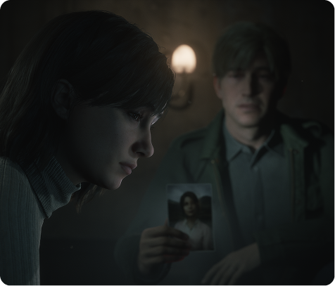
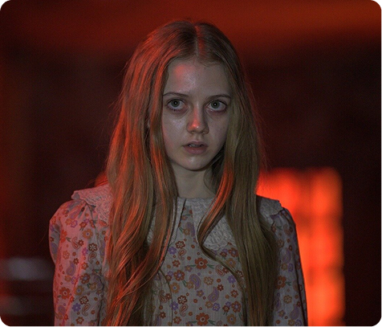
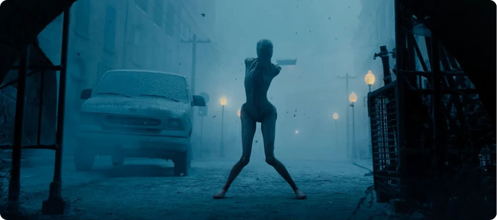
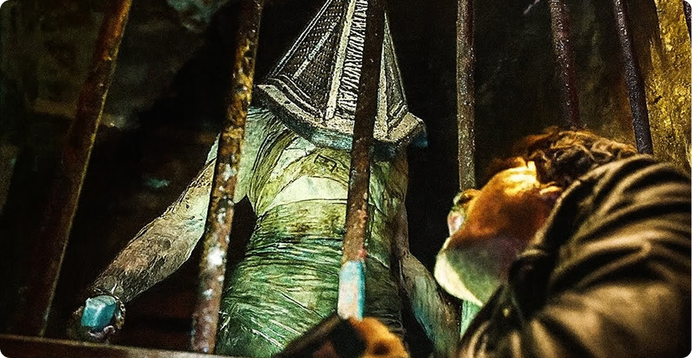
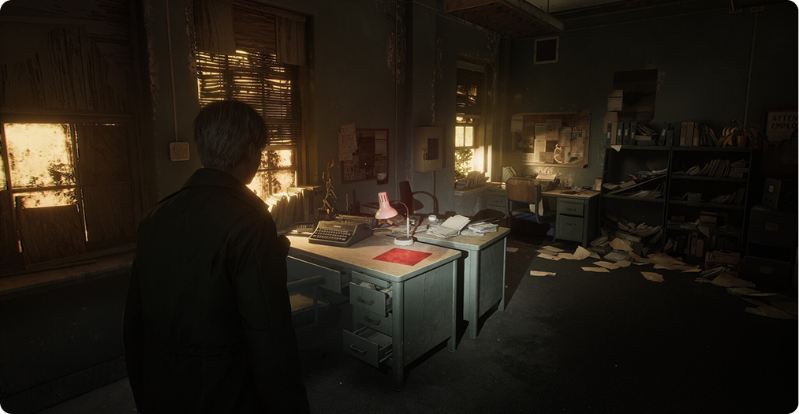
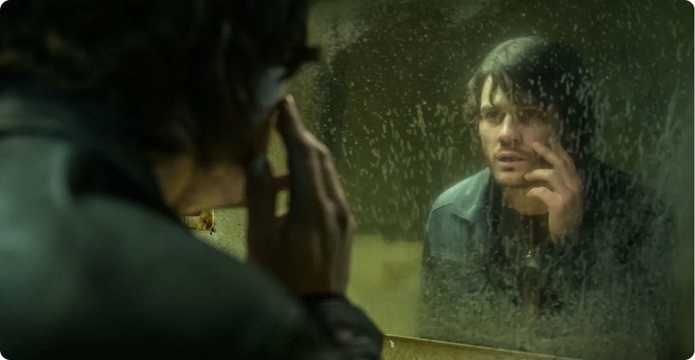

Silent Hill 2 — это путешествие в себя
Silent Hill 2 — это куда больше, чем просто игра про город, где водятся монстры. Это очень личная и болезненная история о человеке по имени Джеймс Сандерленд, которого терзает прошлое. Он погряз в чувстве вины из-за смерти жены, Мэри, и не может с этим справиться. Его съедают невысказанные обиды и злость, которые он сам в себе подавляет.
В Silent Hill 2 очень многое остаётся на совести игрока. Практически невозможно с уверенностью сказать, что именно происходит на самом деле. Каждый сам решает, как ему интерпретировать происходящие события.
Игра заставляет задуматься о том, как мы справляемся с горем, чувством вины и собственными демонами. Именно эта возможность увидеть в истории что‑то своё делает Silent Hill 2 такой особенной и запоминающейся. Это не просто хоррор, это очень личная и глубокая драма, которая затрагивает самые потаённые уголки нашей психики.
В фильме Return to Silent Hill происходит немного другое: то, что раньше было личным кошмаром героя, становится чистым визуалом. Камера показывает все эти жуткие события так, будто они на самом деле происходят вокруг, а не только в голове главного героя. В итоге, зритель видит вещи, которые в игре он, как игрок, чувствовал и переживал сам, мучаясь от сомнений — реально ли это, или плод воображения. Это меняет восприятие истории, делая её более отстранённой и менее личной, чем в игре.


Потеря личного восприятия — главный провал экранизации
Кино требует, чтобы что-то происходило на экране. Даже самое необычное кино показывает что-то наблюдаемое. Но Silent Hill 2 строится на том, что сам игрок становится частью истории. Он сам додумывает детали, сопоставляет факты, сомневается в своих выводах.
В фильме это заменяется:
- сценами из прошлого;
- намеками для зрителя;
- последовательным изложением воспоминаний.
Так что в итоге терзания Джеймса Сандерленда объясняются, а не переживаются. Зрителю не нужно самому ничего решать — за него уже решили, что и почему происходит.
Монстры теряют смысл

В игре монстры — это не просто противники. Они — олицетворение скрытых желаний, позора, нереализованных сексуальных фантазий и склонности к саморазрушению. Их внешний вид и поведение тесно связаны с тем, что происходит в душе у Джеймса.
В фильме монстры — это просто элементы фильма ужасов. Даже Pyramid Head, знаковый персонаж второй части, теряет связь с героем. Он остаётся узнаваемым, но теряет свой смысл. Его появление больше не связано с терзаниями героя, он просто пугает зрителей.

Так символ превращается в дешёвый спецэффект. Выглядит эффектно, но не трогает.
Внешнее сходство обманчиво

Но это похожесть только внешняя, ведь фильм повторяет картинки, но не передаёт сам опыт. Он копирует то, что легко увидеть, но не показывает то, что невозможно передать словами: одиночество, отчуждение, душевную пустоту.
Return to Silent Hill часто хвалят за то, что он похож на игру:
- знакомые места;
- знакомые визуальные образы;
- цитаты из известных сцен.
Голливуд и экзистенциальная пустота — вещи несовместимые
В кино всё должно заканчиваться. Даже трагедия должна иметь свою форму. Но Silent Hill 2 намеренно не даёт зрителю почувствовать облегчение. Остаётся ощущение незавершённости и дискомфорта, некого открытого финала или, как ещё называют, хорошая-плохая концовка.
В фильме же всё по правилам:
- есть завязка;
- есть кульминация;
- есть вывод, который должен что‑то объяснить.
Тем самым разрушается сама идея Silent Hill — места, где нет гарантии искупления, а понимание не всегда приносит свободу.
Фильм не работает даже сам по себе
Даже если забыть про игру, Return to Silent Hill страдает от слабого сценария: персонажи не раскрыты, эмоции кажутся наигранными, картинка не спасает от пустоты в сюжете.

Фильм пытается угодить всем, но:
- случайным зрителям он непонятен без знания игры;
- тем, кто знаком с Silent Hill 2, он кажется слишком простым.
Итог
Return to Silent Hill (2026) не получился не потому, что был снят плохо или с неуважением к оригиналу. Наоборот — он слишком старался быть похожим внешне, забыв о том, что главное — внутренний мир игры. Произведение должно было подарить не только соответствующую картинку, но и состояние, в которое можно погрузиться во время игры.
И в этом кроется главная проблема экранизации.